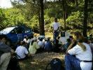
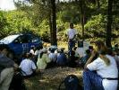
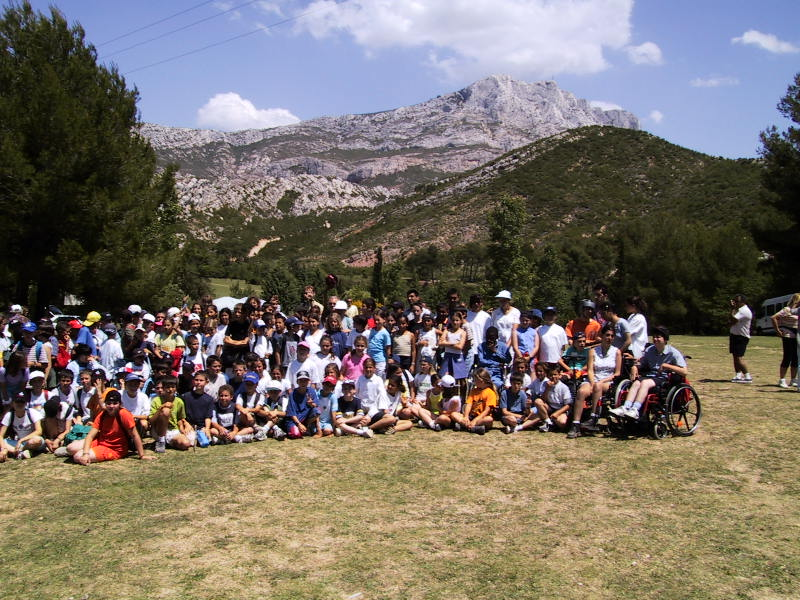
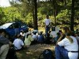
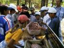
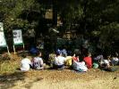
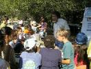
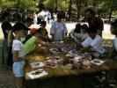

Stand Muséum d'Aix Stand ONF Stand ST Microelectronics + SABA
FÊTE DE LA NATURE 2000
LE 09 JUIN À ROQUES-HAUTES -BEAURECUEIL
LISTE DES ANIMATIONS
PRESENTÉES :
Flore & forêt : ONF - Couleur
Garance - L'Entente Interdépartementale - Atelier de l'environnement
d'Aix-en-Provence APMNE - ARPCV Jean Magnan et Pierre Champroux -
Pollutions & protections : Pompiers
d'Aix-en-Provence - SIVU Sainte-Victoire - UDVN 13 - Les petits débrouillards
- ST Microelectronics & le SABA - AOREADE - ARPCV Marie Renard -
La faune : Groupe chiroptères
de Provence - Piste Sud - Nicolas Chaudron - Vanessa Marti - SIVU Sainte-Victoire
-
L'eau : SABA - DIREN - UDVN13 -
La terre : Muséum d'histoire
naturelle d'Aix-en-Provence - Actif - Nature & Relief
Jeux, nature & environnement :
M.A. Création - Gaz de France - Banque Populaire Provençale
et Corse -
Ecomusée de Gardanne - Christine
Grémy - Antoine Martinez -
Dessins et témoignages des enfants de CM1-CM2 de l'école Edouard Peisson à Luynes ainsi que le CM1 de l'école du Sacré-Coeur à Aix-en-Provence :
" La fête de la nature,
c'est plein de personnes qui nous font faire des ateliers. L'atelier qui
m'a plu, c'est celui des déchets parce que ça n'a pas duré
longtemps et moi, j'avais mal aux pieds."
" Des personnes travaillent
pour protéger la nature. Le meilleur moment, c'est quand on devait
faire le tri des déchets. Trois animatrices nous ont appris à
différencier toutes sortes de saletés."
" Le moment que j'ai préféré,
c'est quand on a écouté les contes sur Sainte-Victoire parce
qu'ils étaient bien écrits et ça nous reposait un
peu."
" La Fête de la Nature
était fort bien mais les poèmes étaient plutôt
pour
des adultes parce qu'ils étaient trop longs et que le poète
parlait à la montagne Sainte-Victoire en train de brûler.
Cela n'a pas grand intérêt pour les enfants de notre âge."
" Grâce à une
maquette, trois personnes nous ont expliqué les dangers que représentaient
la pollution de l'eau des rivières pour la faune. Nous avons fait
des expériences qui simulaient les différents pollutions
provoquées par une usine. Les animatrices nous ont appris comment
arrêter ces accidents. Trois enfants du groupe ont pioché
trois scénarios différents et nos avons résolu les
problèmes. Ainsi nous avons appris que la pollution est dangereuse
pour la nature mais aussi que l'on peut y remédier."
" A 15 heures, après
le travail sur la pollution, nous avons découvert le stand de Gaz
de France. La personne qui tenait le stand nous a expliqué
que dans les villes, quelques voitures et bus utilisaient comme énergie
le gaz de pétrole liquéfié. Ce n'est pas un gaz naturel
mais chimique. Les véhicules fonctionnant au GPL sont moins bruyants
et non polluants. Elle nous a montré une voiture roulant au gaz
naturel. Nous avons aussi découvert un avion fonctionnant à
l'énergie solaire. Les solutions contre la pollution existent !"
" Maintenant, je sais qu'on
raconte des bêtises sur les chauve-souris. Elles ne s'accrochent
pas dans les cheveux."
"Je trouve que c'est bien d'aider
les handicapés et de les faire participer, jouer à cette
fête avec d'autres enfants."
" Encore une fois, bravo pour
cette fête nature, très réussie. Le lieu choisi pour
cette manifestation était idéal. Merci de nous aider à
éveiller les enfants aux problèmes de l'environnement. A
cet âge, ils sont curieux, ouverts, pas encore blasés, réceptifs.
A l'année prochaine, en 2001 ! Je suis toujours partante avec et
pour les élèves qui me sont confiés."
Guillaume Grégoire-
CM1 Luynes
Michaël Vaz DíAlmeida
- CM1 Luynes
Maud Pracca - CM1 Luynes
Tiphaine Barré -
CM1 Luynes
(stand de ST Microelectronics
et du SABA)
Florent Rosso, Claire Facciolo,
Jennifer Cordier,Thibault Petit et Guillaume Marcaggi - CM2 Luynes
Julien Grosso, Matthieu Duterme
et Frédéric Bisson CM2 - Luynes
Michaël - CM1 Sacré
Coeur
Bertrand - CM1 Sacré
Coeur
Martine Clair institutrice
de CM1 - Sacré Coeur
Liste
des écoles primaires participant à cette journée :
- Ecole Edouard Peisson à Luynes
- Ecole du Sacré Coeur à Aix-en-Provence
- Ecole Henri Wallon à Aix-en-Provence
- Ecole du Pont de l'Arc à Aix-en-Provence
- Ecole Marcel Pagnol à Aix-en-Provence
- Ecole des Floralies à Aix-en-Provence
- Ecole du Tholonet
- Ecole de Rousset
- Ecole André Malraux II à
Plan de Cuques
- Ecole des Handicapés moteurs de
la Grotte Roland à Marseille
Photos réalisées
le 9 juin 2000 à Roques-Hautes, au coeur du massif Sainte-Victoire
Vue d'ensemble
Stand SIVU
Stand Gaz de France
 Stand Muséum d'Aix
Stand ONF
Stand ST Microelectronics + SABA 

Les gardes du Syndicat à
la Fête de la Nature
" Le vendredi 09 juin dernier,
l'ARPCV organisait la 10ème Fête de la Nature. Pour la première
fois, les gardes du Syndicat intercommunal ont été associés
à l'organisation de cette manifestation.
Syndicat Intercommunal du Massif
de Sainte-Victoire
Stand Couleur Garance
Stand Pistes Sud
Le lieu choisi de Roques-Hautes
en faisait des acteurs privilégiés. C'est avec un vif
plaisir qu'ils ont préparé leurs stands, essayant de trouver
des sujets à la fois ludiques et pédagogiques. Ils connaissent
bien leur montagne, ces diables de marcheurs ! Il ne leur fut pas très
difficile de repérer, au vu de leur travail, ce qui serait le plus
utile à ces futurs petits randonneurs.
Avant de partir, tu prépares
le sac. Mais qu'y mets-tu dedans ? Thierry t'aide à trouver quoi
prendre sans trop se charger. Et sur le terrain, où vas-tu et comment
y vas-tu ? Facile ! Demande à Florian et Stéphanie, ils t'apprendront
à lire une carte et Laetitia te permettra de te repérer à
l'aide du balisage. Tout cela, c'est bien joli mais comment sais-tu si
tu ne vas pas rencontrer un loup? Un problème ? Voilà Tonin
qui t'apprendra quel animal laisse quelle trace.
Voilà comment les gardes-nature
de Sainte-Victoire ont expliqué la pratique de la montagne aux enfants.
Chacun suivant ses pôles d'intérêts. Après tout
comme le dit l'adage " ce qui se conçoit bien s'énonce clairement
".
Les enfants partis et la place
redevenue calme, les gardes-nature ont aidé à démonter
les stands, satisfaits d'avoir fait passer leur message de sécurité
et de respect de la nature à ces petits citoyens de demain.
Bravo, merci à tous
et à l'année prochaine ! "
 Une journée vivante et variée
" La biodiversité. C'était le fil conducteur
de cette Fête de la Nature du 09 juin 2000.
Jacques DUPUIS -PISTE SUD-Educateur en environnement
Stand MA Création
Stand ARPCV 
Les organisateurs, les animateurs, les nombreux élèves,
les instits, tous avaient l'air bien vivants.
Pour la diversité, c'était pas mal non
plus, avec "la Sainte" en toile de fond, les différentes animations,
et les enfants bien-sûr!
En tous cas les abeilles qui étaient sur le stand
de l'association Piste Sud ont dansé pour nous dire qu'elles étaient
heureuses d'avoir pu dévoiler quelques secrets de leur vie.
La biodiversité, c'est une richesse. Une autre
richesse, c'est l'échange, cette journée y a participé.
Bonne continuation ! "
 Témoignages de stagiaires Orcadie
au centre de formation ARES.
Une journée colorée...
" En venant à la Fête de la Nature, je me suis dit que
ça allait être rébarbatif... des stands pour les gamins,...bof
! Comment recycler les déchets, sauver la forêt,.. des choses
importantes mais tellement rabâchées et banalisées.
En fait, j'ai été agréablement surprise par les différents
stands, leur présentation, l'accueil et aussi la beauté du
site. J'ai été très intéressée par l'atelier
dessin avec sa conception sur l'importance de chacun dans l'environnement,
par sa forme, son existence, ceci appliqué à travers la peinture.
Je n'ai pas tout compris mais ce que j'ai retenu est que chaque chose ou
personne peut avoir ou devrait avoir un rôle à jouer dans
son environnement... hêtre ou ne pas hêtre....
Moi aussi, au départ, je pensais que j'allais m'ennuyer et une
fois arrivée, j'ai découvert un autre monde, un monde d'enfants
avec des adultes chaleureux qui expliquaient les choses patiemment et passionnément,
communiquant aux enfants le plaisir d'apprendre. J'ai découvert
la magie des couleurs des plantes, la création de sacs tissés
avec des sacs poubelles, etc..
Nous remercions les animateurs des stands et Sandrine Martin pour la
qualité de leurs prestations et leur chaleureux accueil.
Carole CERDAN, Joëlle MANZI, Djamilla BELAZREG.

J'ai également trouvé très intéressant
le stand sur la préhistoire.
En conclusion, je trouve que tout ce qui était présenté
était très bien fait. On devrait l'ouvrir au grand public
et faire ensemble, petits et grands, une grande Fête de la Nature.
Merci à Pascale et Karine (formatrice ARES) de nous avoir proposé
de participer à une si bonne journée, instructive et relaxante.
Bref, de la qualité au naturel ! "